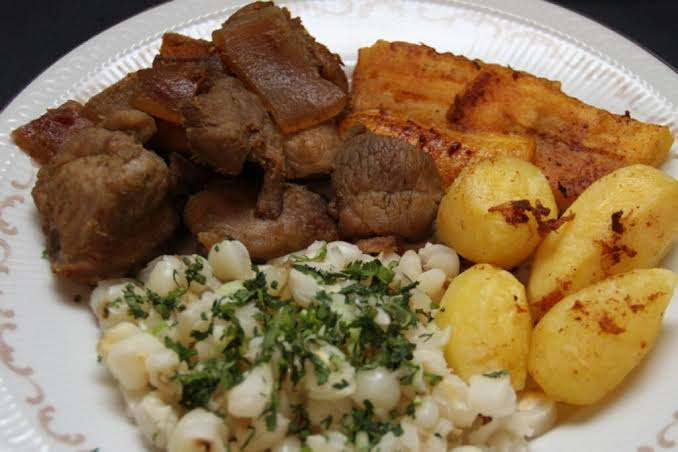
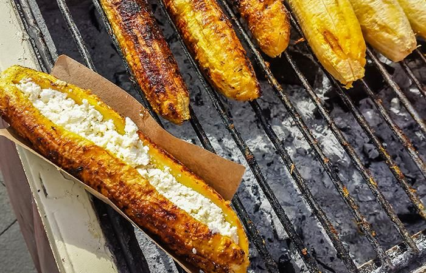
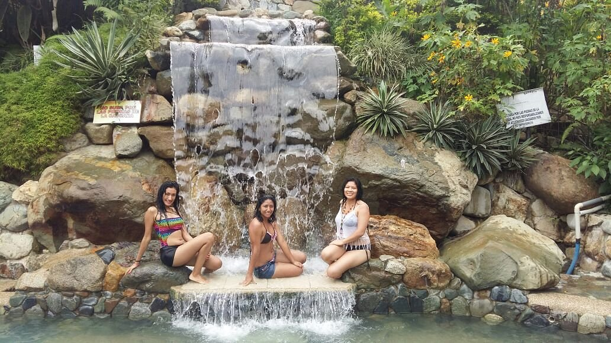

Montalvo es un cantón ubicado al sureste de la provincia de Los Ríos. Es conocido por sus paisajes naturales, su clima cálido y su producción agrícola. Su nombre fue colocado en honor al escritor ecuatoriano Juan Montalvo.
Montalvo es la parroquia urbana y cabecera cantonal. Su zona rural está conformada por recintos y comunidades.



Existen hostales y residenciales en la cabecera cantonal.
Eduardo Troncoso Alvarado (período 2023-2027; verificar autoridad vigente).
Aproximadamente 28.000 habitantes (referencia del Censo 2022).